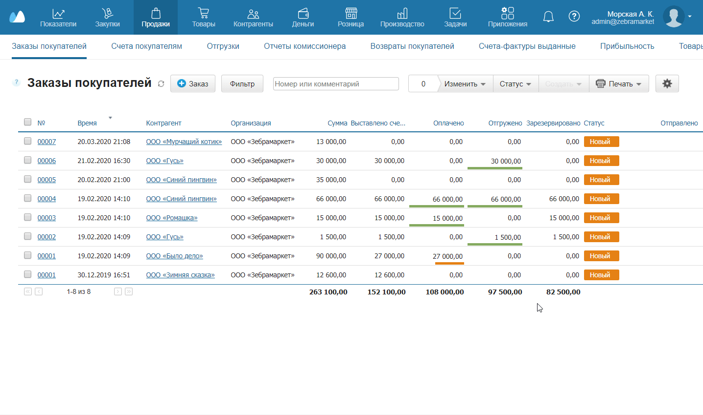
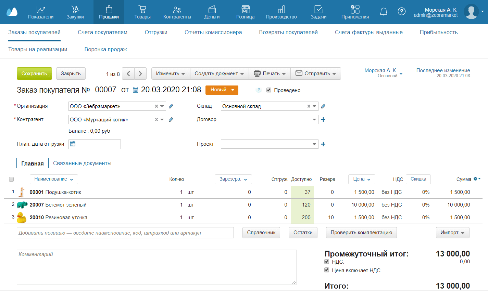
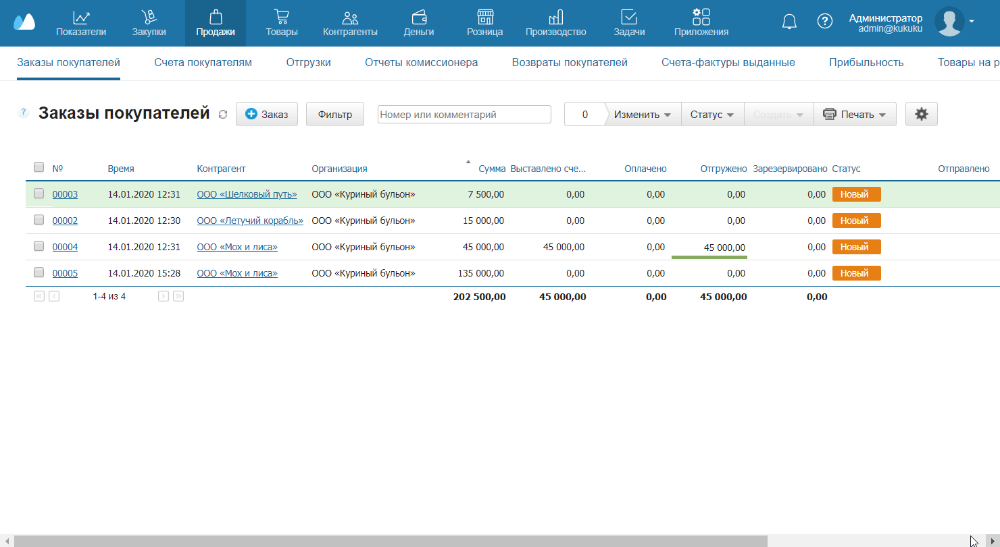

Из МоегоСклада можно печатать:
- Отдельные документы — заказы, договоры и так далее.
- Комплекты документов — связанные документы: например, счет, накладная и счет-фактура, которые относятся к одному заказу.
- Списки документов — списки заказов покупателей, отгрузок и прочие.
- Отчеты — по остаткам на складе или движению денежных средств.
Кроме того, можно печатать этикетки и ценники — об этом рассказывается в отдельной статье.
Ссылку на любой документ в МоемСкладе можно оформить в виде QR-кода. Для этого необходимо сгенерировать QR-код и добавить ссылку на него в шаблон документа. См. пример Заказа покупателя.
Печать отдельного документа
Рассмотрим стандартную печать документа на примере заказа покупателя.
- Пройдите в раздел Продажи → Заказы покупателей.
- Откройте нужный заказ из списка.
- Нажмите вверху на кнопку Печать.
- В выпадающем списке выберите нужный документ (в данном случае Заказ). Откроется окно Создание печатной формы.
- В выпадающем списке выберите способ печати:
- Открыть в браузере — файл откроется в новой вкладке, где его можно просмотреть и распечатать или скачать.
- Скачать в формате… — файл загрузится на компьютер в выбранном формате.
- При необходимости поставьте флажок Запомнить выбор. Также можно установить способ печати в настройках.
- Нажмите Да — документ откроется в новой вкладке либо загрузится на компьютер.


Если стандартная печатная форма документа не подходит, можно скачать другую в разделе Шаблоны. При необходимости можно подключить собственный шаблон.
Печать комплекта документов
Рассмотрим печать комплекта документов на примере заказа покупателя.
- Пройдите в раздел Продажи → Заказы покупателей.
- Откройте нужный заказ из списка.
- Нажмите вверху на кнопку Печать.
- В выпадающем списке выберите Комплект… Откроется список документов для печати.
- Отметьте флажками документы, которые нужно напечатать. Проставьте необходимое количество экземпляров.
- Нажмите на кнопку Распечатать — на компьютер загрузится единый файл в формате PDF со всеми документами.

Настройка печати
Чтобы при печати отдельного документа не выбирать способ каждый раз, поправьте настройки печати — документы будут сразу открываться в браузере или загружаться на компьютер.
- Пройдите в раздел Меню пользователя → Настройки пользователя.
- Найдите справа в разделе Настройки строку Формат печати документов.
- В выпадающем списке выберите нужный способ печати либо оставьте значение Предлагать выбор — в этом случае в каждом отдельном случае можно будет выбирать свой способ печати.
- Нажмите Сохранить.
Доступ к печати документов
Возможность отправлять документы на печать имеют только сотрудники, обладающие соответствующими правами. Если сотрудник не является администратором, вы можете предоставить или закрыть ему доступ к печати документов.
Также вы можете сразу из сервиса отправлять документы контрагентам.